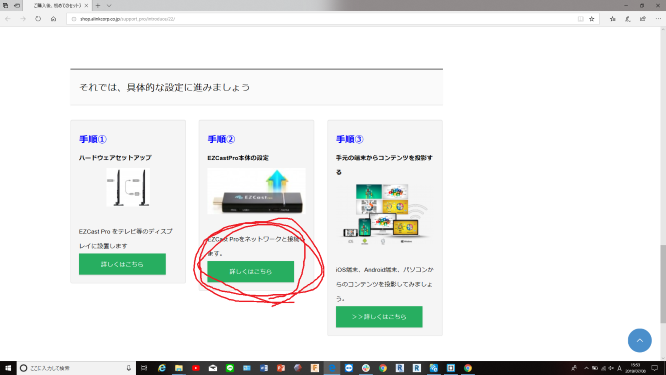
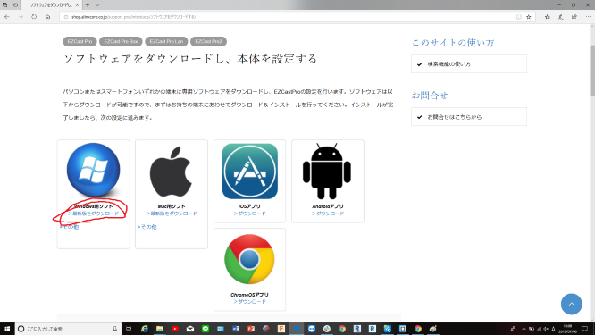
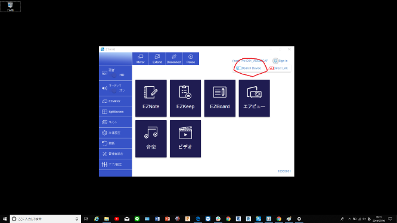
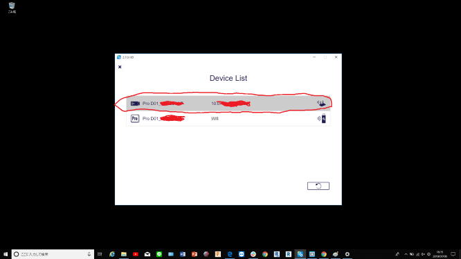
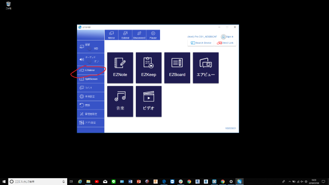
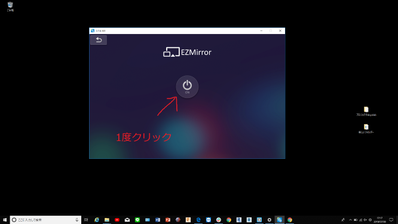
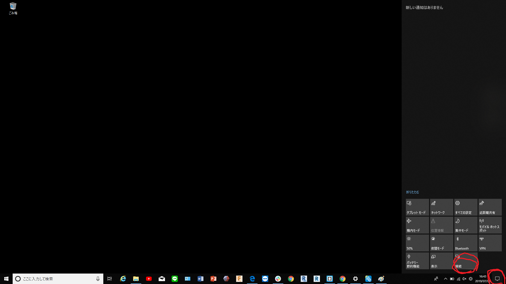
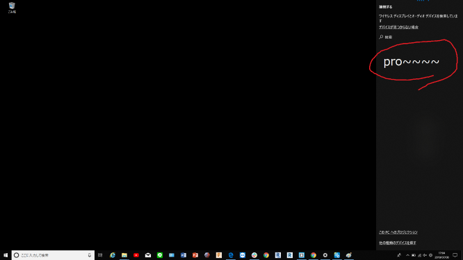

※接続方法は1つではないので紹介する接続方法以外のやり方でも可能です。
下記のURLからEZ Castのソフトウェアをダウンロードし、インストールします。
まずは、下記のURLにアクセスしてください。
EZ Cast ソフトウェア
赤い線で囲った”詳しくはこちら”にアクセスしてください。

赤い線で囲ったリンクを選択して実行します。

Search Deviceを選択します。

赤で囲った上の欄をダブルクリックします。
そうするとソフトウェアとEZ Castが接続されます。

赤で囲ったEZ Mirrorを選択します。

真ん中にある電源ボタンを1回クリックします。（ここでは何の反応もありません）

デスクトップ画面の右下の四角いマークを押して、接続を選択します。

接続先一覧の中のPro-----を選択し、しばらく待機するとプロジェクターに接続されます。
